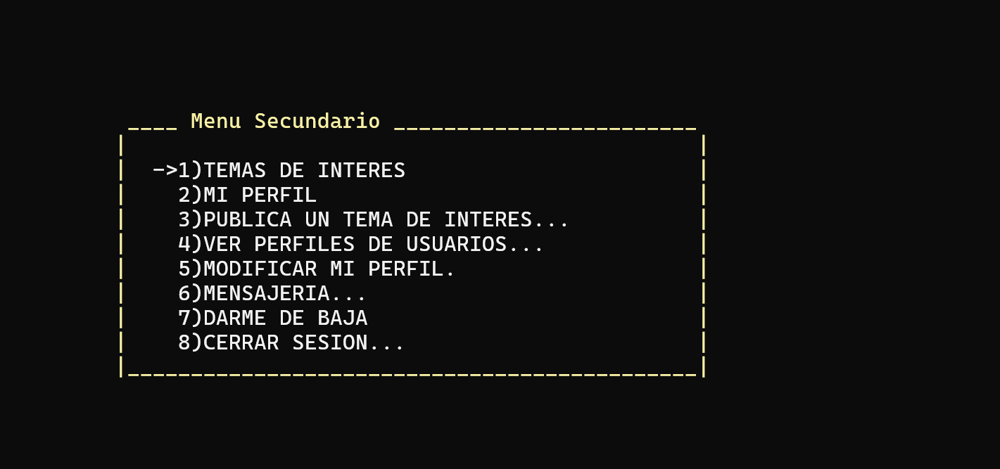
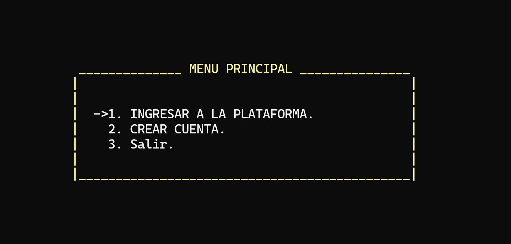
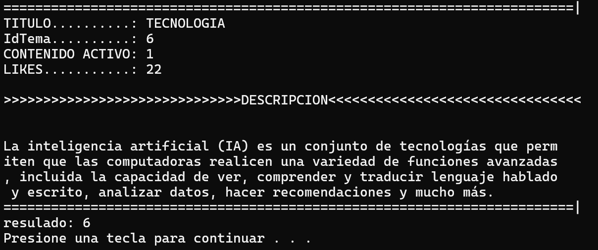
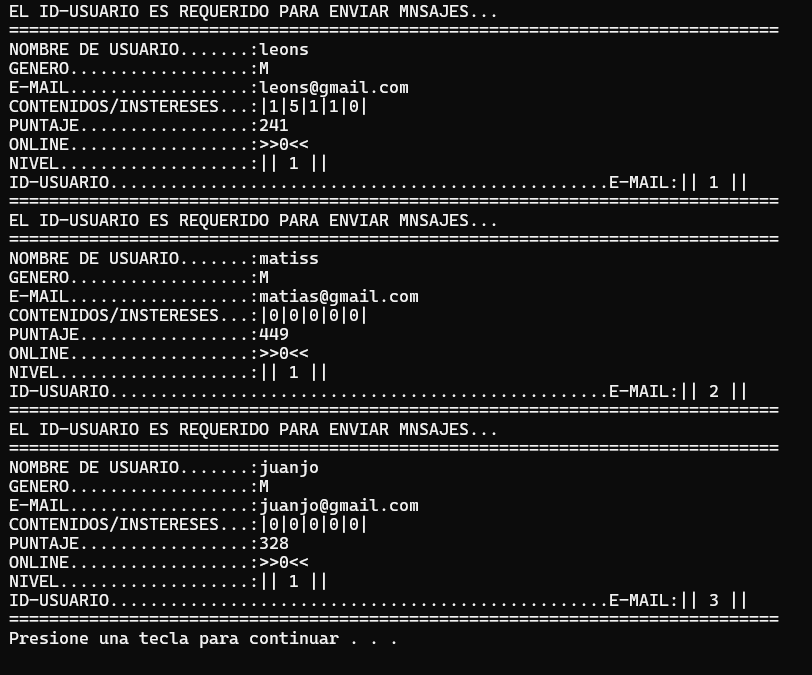

Inicio Proyectos 6 · Red Social en C
Red Social en C
Una red social con forma de foro, en la consola y en C puro, como trabajo grupal de Programación 1: usuarios, temas, likes y mensajes, todo en disco.
Rol
Trabajo grupal (4 integrantes), Programación 1, UTN. Diseño y código compartidos.
Stack
C · structs · archivos binarios .dat · menús con gotoxy
Datos
stUsuario · stContenido · stMensaje · persistencia propia
Estado
Repo público, aplicación de consola · github.com/matifl3/proyectoprogra1 ↗
Qué gestiona esta red
Una plataforma social (estilo foro) construida para ejercitar estructuras de datos y persistencia en C: registrar usuarios, publicar temas de interés, valorar contenidos y gestionar perfiles, todo guardado en archivos binarios.
Qué construimos
- Registro e inicio de sesión de usuarios.
- Roles de administrador y usuario.
- Publicación de temas de interés con likes y puntajes.
- Mensajería interna y gestión de perfiles (alta / baja / modificación).
- Estado en línea de cada usuario.
- Persistencia en archivos binarios y menús dibujados con gotoxy.
Bajo el capó
- Tres structs núcleo: usuario, contenido y mensaje.
- IDs incrementales, roles, niveles y puntajes por usuario.
- UI de consola con posicionamiento de cursor (gotoxy), sin librerías externas.
- Diseñado y codificado en equipo de cuatro.
Capturas
La consola, corriendo.



